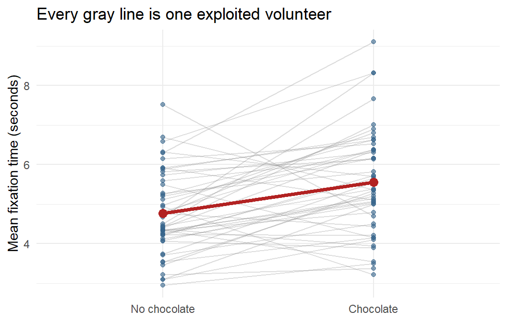
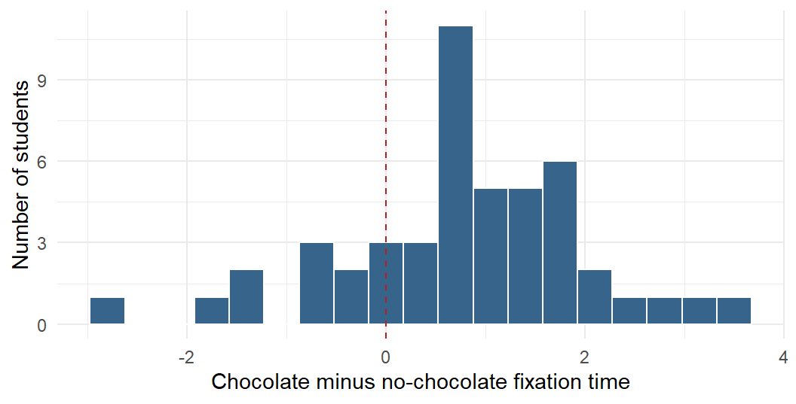

set.seed(343)
n <- 48
# Each student gets a personal tendency to stare, high or low, that follows
# them into BOTH conditions. This is what makes the two scores correlated,
# and it is the thing pairing will subtract back out.
participant_effect <- rnorm(n, mean = 0, sd = 1.20)
paired_wide <- data.frame(
participant = factor(seq_len(n)),
# each condition = a baseline + that person's tendency + fresh noise
no_chocolate = 5.00 + participant_effect + rnorm(n, 0, 0.80),
chocolate = 5.75 + participant_effect + rnorm(n, 0, 0.80)
)
# one difference score per person: the whole test runs on this column
paired_wide$difference <-
paired_wide$chocolate - paired_wide$no_chocolate
# pivot_longer() stacks the two condition columns into one, turning
# 48 rows into 96. See the wide-vs-long section below for why we want both.
paired_long <- tidyr::pivot_longer(
paired_wide,
cols = c(no_chocolate, chocolate), # the columns to stack
names_to = "condition", # new column holding the old column names
values_to = "fixation" # new column holding the values
)
paired_long$condition <- factor(
paired_long$condition,
levels = c("no_chocolate", "chocolate"),
labels = c("No chocolate", "Chocolate")
)9 Paired-Samples t-Test
NoteThe Same People Have Returned
Use a paired-samples t-test when the same people are measured twice or when observations form meaningful pairs. The two scores from one person know each other. Pretending they are independent is statistical identity theft.
The central idea is simple: turn each pair into one difference score, then ask whether the average difference is zero. That is the whole test. Nobody needs a random effect yet. The random effects are waiting in a later chapter, and they will want receipts.
9.1 Why Pair the Scores?
An independent-samples design compares different people. Half the students receive chocolate during a lecture and half receive nothing except the lecture itself, which already seems cruel. Each student contributes one score.
A repeated-measures design measures the same students twice. Every student attends one lecture without chocolate and one with chocolate. Each student is now their own control.
A matched-pairs design uses different people who were deliberately matched on something important, such as age or baseline ability. This can help, but matched strangers are not magical clones. If you place two undergraduates beside each other because they have the same GPA, one may still be a morning person while the other communicates only through exhausted grunting. The analysis is identical (pair, difference, test), but matched strangers usually correlate far less than a person does with themself, so the power benefit is real and smaller. Watch for the \(-2rS_1S_2\) term later in this chapter, because everything depends on that \(r\).
Repeated scores tend to be correlated because stable characteristics follow people into both conditions. A student who generally looks at the screen for a long time may do that with or without chocolate. Another student may stare out the window in both conditions while contemplating escape. Pairing lets us remove some of those stable person-to-person differences.
9.2 A Chocolate-Fixation Study
Suppose we ask whether eating a small piece of chocolate during a lecture changes fixation time: the average number of seconds a student’s eyes remain on the screen per glance. We measure 48 students twice:
- once with no chocolate;
- once with chocolate.
This example is simulated. Do not distribute mystery candy to human participants and announce that a textbook authorized it. I mean, I do, but no one tell the IRB (ethics review board). Snitches get no chocolate, also maybe stitches.
WarningThe Price of Measuring the Same Person Twice
Measuring someone twice buys you statistical power (an easier time seeing an effect if one actually exists), but it charges you for the privilege. Three things ride along with that second measurement:
- Practice effects. People get better at a task simply by having done it once. We cannot wipe their memories between trials, pesky IRB again.
- Fatigue effects. They get worse on the task because they are tired and would like to go home. I tried to lock the doors, but Fire Marshal Bill paid me a visit.
- Carryover. The first condition is still working on them when the second one starts. The accumulation of experience, always causing problems.
Here is the problem for our study. If every student sits through the no-chocolate lecture first and the chocolate lecture second, then “chocolate increased fixation time” and “students settled down in the second session” are the same sentence. No t-test can separate them, because nothing in the data distinguishes them.
The fix is counterbalancing. Half the students get chocolate first and half get it second. Order effects still happen, but now they land on both conditions equally and cancel out of the comparison. So assume we counterbalanced, because we are professionals.
Counterbalancing does not fix everything. Chocolate eaten in the first session does not un-eat itself ten minutes later, so with sessions that close together the sugar is still in the room during the control condition. Spacing matters, and some carryover cannot be designed away at all.
Those last few lines built the same data twice, in two different shapes. This confuses more students than any actual statistics in this chapter, so it is worth slowing down for.
Wide data give each person one row, with a separate column for each condition:
head(paired_wide[, c("participant", "no_chocolate", "chocolate")], 3) participant no_chocolate chocolate
1 1 3.216540 3.378271
2 2 6.692332 5.360605
3 3 4.404871 6.355612Three students, three rows. The pairing is impossible to miss here, because each person’s two scores sit side by side and you can subtract across the row with your eyes.
Long data give each measurement its own row, so one person now takes up two:
head(paired_long[, c("participant", "condition", "fixation")], 6)# A tibble: 6 x 3
participant condition fixation
<fct> <fct> <dbl>
1 1 No chocolate 3.22
2 1 Chocolate 3.38
3 2 No chocolate 6.69
4 2 Chocolate 5.36
5 3 No chocolate 4.40
6 3 Chocolate 6.36The same three students. The same six numbers. Six rows instead of three. Participant 1 now appears twice, and a new condition column keeps track of which measurement each row belongs to.
Neither shape is “more better” than the other. They are the same data wearing different pants, and different tools insist on different pants:
t.test(..., paired = TRUE)wants wide, because you hand it two vectors and it matches them up position by position. Row 1 with row 1, row 2 with row 2, and so on.ggplot()wants long, because it needs one column to put on the x axis and one to put on the y axis. The plot below draws a separate line for each participant, which is only possible if there is aconditioncolumn to move along.- Mixed regressions will also want long, for the same reason, when we get there.
tidyr::pivot_longer() turns wide into long, and pivot_wider() turns it back. You will do this constantly, usually at the precise moment a plot refuses to work.
TipHow to Tell Which Shape You Are Holding
Count the rows and compare that to the number of humans.
If the two match, you are in wide format. If you have more rows than people, you are in long format, and some column in there is telling you what the extra rows are for.
9.3 Look at the Pairs Before Testing Them
library(ggplot2)
ggplot(
paired_long,
aes(x = condition, y = fixation, group = participant)
) +
geom_line(alpha = 0.30, color = "gray55") +
geom_point(alpha = 0.60, color = "steelblue4") +
stat_summary(
aes(group = 1), fun = mean, geom = "line",
color = "firebrick", linewidth = 1.3
) +
stat_summary(
aes(group = 1), fun = mean, geom = "point",
color = "firebrick", size = 3
) +
labs(
x = NULL,
y = "Mean fixation time (seconds)",
title = "Every gray line is one exploited volunteer"
) +
theme_minimal(base_size = 11)
The red line shows the mean change. The gray lines show something the means hide: some people change more than others, and a few may move in the opposite direction. If you plot only two bars, all those people are compressed into rectangular coffins.
9.4 The Paired t-Test Is a One-Sample t-Test in Disguise
For each person, compute a difference score:
\[ D_i=Y_{i,\text{chocolate}}-Y_{i,\text{no chocolate}} \]
Then ask whether the population mean difference is zero:
\[ t=\frac{M_D-0}{S_D/\sqrt{n}} \]
This is the one-sample t-test from the earlier chapter. The paired t-test does not compare two unrelated piles of scores. It reduces every pair to one difference and tests the set of differences.
paired_result <- t.test(
paired_wide$chocolate, # first vector
paired_wide$no_chocolate, # second vector, in the SAME person order
paired = TRUE # the one argument that changes everything
)
paired_result
Paired t-test
data: paired_wide$chocolate and paired_wide$no_chocolate
t = 4.3366, df = 47, p-value = 7.597e-05
alternative hypothesis: true mean difference is not equal to 0
95 percent confidence interval:
0.4209697 1.1495099
sample estimates:
mean difference
0.7852398 paired = TRUE is doing all the work in that call. Without it, R would compare the two columns as though they came from 96 unrelated students. With it, R matches them row by row, subtracts, and tests the differences. Which means row order matters: row 1 of the first vector must be the same human as row 1 of the second.
9.4.1 R Has Become Picky About the Formula Method
The formula method of t.test() does not accept paired = TRUE, so this will fail:
t.test(fixation ~ condition, data = paired_long, paired = TRUE)Use the two paired vectors, as above. Even better, make the pairing visible by calculating the differences yourself:
# A one-sample t-test on the difference column, asking whether it differs from 0.
# No paired = TRUE needed, because we already did the subtracting ourselves.
difference_result <- t.test(paired_wide$difference, mu = 0)
difference_result
One Sample t-test
data: paired_wide$difference
t = 4.3366, df = 47, p-value = 7.597e-05
alternative hypothesis: true mean is not equal to 0
95 percent confidence interval:
0.4209697 1.1495099
sample estimates:
mean of x
0.7852398 The t statistic, degrees of freedom, and p-value match. R has not discovered two separate truths. We asked the same question twice.
ImportantThe Unit of Analysis Is the Pair
We began with 96 scores, but the test has 48 difference scores. Therefore, \(df=n-1=47\). Counting every measurement as an independent person would double the apparent sample size and create confidence unsupported by the design. The spreadsheet may have 96 rows. The study still has 48 humans.
9.5 Effect Size
A common standardized effect for paired data is Cohen’s \(d_z\):
\[ d_z=\frac{M_D}{S_D} \]
# Note the denominator: the SD of the DIFFERENCES, not of either condition.
d_z <- mean(paired_wide$difference) /
sd(paired_wide$difference)
d_z[1] 0.6259363This standardizes the mean change by the standard deviation of the difference scores. Say which version of \(d\) you used because repeated-measures effect sizes have several possible denominators. Calling all of them “Cohen’s d” and wandering away is how future readers begin sharpening office supplies.
9.6 Why Pairing Helps
Forget chocolate for a minute. Suppose I want to know whether wearing shoes makes you taller.
The bad design. I measure 50 people wearing shoes and 50 different people barefoot, then compare the two group averages. The shoe effect is about an inch. But people range from roughly five feet to six and a half feet, so the differences between people are enormous compared with the thing I actually care about. My one inch is drowning in eighteen inches of human height that has nothing to do with footwear.
The good design. I measure the same person twice, once in shoes and once barefoot. Now each person’s own height cancels out of their own difference score, because their height is sitting in both measurements. The six-foot-four person gives me about an inch. The five-foot-two person also gives me about an inch. The noise disappeared and the effect did not.
That is the whole idea, and your fixation data works the same way. Some students stare at the screen longer than others no matter what is in their mouth. Comparing each student with themself strips that variation out before it ever reaches the test, and what survives is the part chocolate is responsible for.
There is a catch, and it is the reason pairing is not automatically better. This only works to the extent that a person’s two scores actually travel together. Height travels together beautifully, because you are the same height in both measurements. If a person’s score today told you nothing whatsoever about their score tomorrow, there would be nothing stable to subtract out, and pairing would buy you almost nothing.
If you want to see exactly how that cancelling works, and the term in the formula that controls how much you get, the next section has the details.
9.7 Advanced: Why Pairing Can Help
Here is the same argument with the algebra attached. The variance of a difference score is:
\[ S_D^2=S_1^2+S_2^2-2rS_1S_2 \]
That \(r\) is the correlation between a person’s two scores, and it is the shoes-and-height idea in symbolic form. When the two measurements are positively correlated, the last term subtracts variability. Stable person differences cancel: the consistently attentive student is compared with themself, and the student planning an elaborate escape is also compared with themself.
Notice what happens at the extremes. If \(r = 0\), the two scores know nothing about each other, that last term is zero, and the variance of the difference is just \(S_1^2 + S_2^2\). You paired the data and got nothing for it. The closer \(r\) climbs toward 1, the more the last term eats, and the smaller the difference scores’ variance becomes.
This often gives a smaller standard error than an independent-samples analysis. Pairing does not guarantee more power, however. If the repeated scores barely correlate, little stable variation is removed. Pairing also cannot repair a terrible measure. Measuring attention by counting how often someone blinks at the ceiling remains a terrible plan in both conditions.
9.7.1 How Much Does Pairing Actually Buy You?
We have the data, so we do not have to speculate. First, how correlated are the two measurements? Then we run the analysis incorrectly on purpose, treating our 96 scores as if they came from 96 different students who happened to wander in:
# How much do a person's two scores agree with each other?
cor(paired_wide$chocolate, paired_wide$no_chocolate)
# The WRONG test, run deliberately: the same numbers with the pairing thrown away.
# Do not copy this into your homework.
unpaired_result <- t.test(paired_wide$chocolate, paired_wide$no_chocolate)
unpaired_result[1] 0.4638286
Welch Two Sample t-test
data: paired_wide$chocolate and paired_wide$no_chocolate
t = 3.2144, df = 88.988, p-value = 0.001822
alternative hypothesis: true difference in means is not equal to 0
95 percent confidence interval:
0.2998481 1.2706316
sample estimates:
mean of x mean of y
5.551277 4.766037 Same numbers. Same two means. The same mean difference of 0.79 seconds. Nothing about the data changed, only what we told R about where the numbers came from.
The paired test gave \(t(47) =\) 4.34. Ignoring the pairing gives \(t(89) =\) 3.21, roughly 1.35 times smaller. The standard error tells the same story: 0.18 seconds when we keep the pairing, 0.24 seconds when we discard it.
Where did the extra error come from? From the students. Some people simply stare longer than others, in both conditions, for reasons that have nothing to do with chocolate. The paired test subtracts that stable personal tendency out and never looks at it again. The unpaired test has no idea those students are the same humans, so all of that person-to-person variability gets dumped into the error term, where it makes the difference between conditions look less trustworthy than it is.
That is the whole argument for within-subjects designs, and it is why the design chapter of every methods book keeps yelling about them. It is also, in this case, a correlation of only 0.46. A stronger correlation would have bought even more.
9.8 Assumptions That Actually Matter
For the paired-samples t-test:
- the observations form genuine pairs;
- different pairs are independent of one another;
- the outcome is quantitative;
- the difference scores have no severe outliers;
- for small samples, the population distribution of difference scores is reasonably normal.
The test does not require the two condition variances to be equal. It operates on one set of differences. Inspect those differences, not two separate normality tests performed as ritual offerings.
ggplot(paired_wide, aes(x = difference)) +
geom_histogram(binwidth = 0.35, color = "white", fill = "steelblue4") +
geom_vline(xintercept = 0, linetype = 2, color = "firebrick") +
labs(
x = "Chocolate minus no-chocolate fixation time",
y = "Number of students"
) +
theme_minimal(base_size = 11)
9.9 Reporting the Result
For the present study, a concise report could be:
Students showed longer fixation times during the chocolate condition (\(M =\) 5.55, \(SD =\) 1.33) than during the no-chocolate condition (\(M =\) 4.77, \(SD =\) 1.05). The mean paired difference was 0.79 seconds, 95% CI [0.42, 1.15], \(t(47) =\) 4.34, \(p\) < .001, \(d_z =\) 0.63.
The statistic cannot prove that chocolate caused better attention unless the study was properly randomized and alternative explanations were controlled. It certainly cannot prove that replacing every lecture with a bucket of candy is sound educational policy.
9.10 When Two Measurements Are Not Enough
One difference score works beautifully when each person has two measurements and the question is about their average change. With three or more occasions, missing observations, both within-person and between-person predictors, or people who change at different rates, one difference score cannot represent the whole design.
That is where mixed regression begins. It keeps the repeated observations, tells the model which rows belong to the same human, and allows people to differ without creating one indicator variable for every person who wandered into the study.
9.11 Power: How Many People Would You Need?
Same function again, with type = "paired". Two things change from the independent-samples version: the effect size you feed it is \(d_z\), and the n that comes back is the number of pairs, which here means the number of people, since each person supplies both scores.
Paired.Power.80 <- power.t.test(n = NULL,
delta = d_z, # the effect size for paired data
sd = 1,
sig.level = 0.05,
power = .80,
type = "paired",
alternative = "two.sided")
ceiling(Paired.Power.80$n)[1] 2323 pairs, meaning 23 people, each measured twice.
9.11.1 Why Pairing Is Cheaper
Here is the payoff for repeated measures, and it is the whole reason this design is worth the counterbalancing headache. Compare what it costs to detect the same effect in the two designs:
# Same effect size, same power, same alpha. Only the design changes.
n_independent <- ceiling(power.t.test(delta = d_z, sd = 1, power = .80,
sig.level = .05,
type = "two.sample")$n)
n_paired <- ceiling(power.t.test(delta = d_z, sd = 1, power = .80,
sig.level = .05,
type = "paired")$n)
c(independent_per_group = n_independent,
independent_total = 2 * n_independent,
paired_people = n_paired)independent_per_group independent_total paired_people
42 84 23 84 people the hard way against 23 the smart way. The paired design needs far fewer humans, because pairing removes the stable person-to-person differences from the denominator, exactly as the shoes-and-height section promised:
\[ S_D^2 = S_1^2 + S_2^2 - 2rS_1S_2 \]
ImportantThis Comparison Is Fair Only If You Are Careful
The numbers above compare designs at the same \(d_z\), and \(d_z\) is not on the same scale as the independent-samples \(d\). A paired design with a strong within-person correlation can produce a large \(d_z\) from a modest raw change, because the denominator shrank.
So: repeated measures usually do buy power, sometimes dramatically. But do not report a \(d_z\) of 1.2 and let a reader believe it means what a between-groups \(d\) of 1.2 would mean. Say which effect size you used. Every time. Repeated-measures effect sizes have several possible denominators, and pretending otherwise is how future readers begin sharpening office supplies.
9.12 The Short Story
- Use a paired-samples t-test when observations form genuine pairs.
- The same person measured twice is the most common paired design.
- Compute one difference score for each pair.
- A paired-samples t-test is a one-sample t-test on those differences.
- The unit of analysis is the pair, not the individual measurement.
- Inspect the distribution and outliers of the differences.
- Report the mean change, confidence interval, p-value, and the specific paired effect size you used.
- When the design grows beyond one clean pair of scores, continue to the mixed-regression chapter.
The grand lesson is not “memorize another command.” It is “keep the two scores attached to the human who produced them.” The humans already know they are the same person. R needs paperwork.